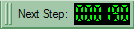

Contents |
From 30.000 feet
SUMO-GUI is basically the same application as SUMO, just extended by a graphical user interface.
- Purpose: Simulates a defined scenario
- System: portable (Linux/Windows is tested); opens a window
- Input (mandatory): A SUMO-configuration file (see SUMO)
- Output: SUMO-GUI generates the same output as SUMO
- Programming Language: c++
Usage Description
{kind=link}
Being a window-based application, SUMO-GUI is started by a double click with the left mouse button on Windows, on Linux probably with a single click. After this, an empty window should show up, similar to the one shown in the image.
Using either the "File->Open Simulation..." menu entry or by using the "open"-icon (), you should be able to load an existing SUMO configuration file, if it has the proper extension ".sumocfg". If the SUMO configuration file is erroneous, the errors are reported, otherwise your network referenced within the configuration file should be shown. Now you can start to simulate by pressing the "play" button (). The simulation works as if being started on the command line. The simulation can be halted using the "stop" button () and continued by pressing the "play" button again. When stopped, also single steps may be performed by pressing the "single step" button ().
{kind=link}
{kind=link}
{kind=link}
{kind=link}
If the simulation is running, the current simulation step is shown in the "digital digits" field, right to "next step" ().
{kind=link}
Besides loading simulation configurations, it is also possible to load networks by using either the "File->Open Network..." menu entry or by using the "open network"-icon (). Please note, that normally SUMO-GUI assumes networks have the extension ".net.xml", but also accepts other extensions.
{kind=link}
Both, the loaded simulation or the loaded network may be reloaded using the "reload" button () or the menu entry "File->Reload".
{kind=link}
If a network or a simulation are loaded, the navigation through the network is possible with the mouse only. One can drag the network with the left mouse button pressed into all directions and zoom either by using the mouse wheel or by pressing the right mouse button and moving the mouse up and down. For fine grained zooming (half zoom speed) press the "Control" key while using the mouse wheel, for double speed use "Shift".
Interaction with the View
Basic Navigation
{kind=link}
As soon as a network is displayed, one can interact with the view. Pressing the left mouse button within the view and moving the mouse with the button pressed, will shift the network. Moving the mouse up and down while pressing the right mouse button changes the zoom of the network. It is also possible to change the zoom by using the mouse wheel (holding <SHIFT> increases the zooming speed and holding <CTRL> lowers it). Zooming is either focused on the center of the screen or on the cursor position. The zoom style can be selected with the button.
{kind=link}
You can also control which part of the network is visible by directly setting the network coordinates which shall be at the center of the screen along with the zoom (given a value of 100 the whole network will fit onto the screen). These settings can be changed by opening the viewport editor using the button. From this editor, it is possible to save the current settings () or load previously saved ones ( within the viewport editor).
{kind=link}
{kind=link}
The viewport is defined as following: <viewport zoom="<ZOOM>" x="<X>" y="<Y>"/>. It can be loaded as a part of viewsettings.
Pressing the center-button () from the menu bar at the top of the view, will reset the viewport so that the complete network is shown.
{kind=link}
Changing the appearance/visualisation of the simulation
Vehicle Visualisation Settings
Table 1.1 Vehicle coloring schemes and boundaries
| Name | Measure | Min Value | Max Value | Description |
|---|---|---|---|---|
| uniform | - | - | - | All vehicles are colored uniformly |
| given/assigned vehicle color | - | - | - | The color given within the vehicle definition |
| given/assigned type color | - | - | - | The color given within the vehicle type definition |
| given/assigned route color | - | - | - | The color given within the vehicle route definition |
| depart position as HSV | - | - | - | The depart position of each vehicle, relative to the network center, is used to color the vehicle. Direction will be used as H(ue), distance from the center as S(aturation), V(alue) is always 1. |
| arrival position as HSV | - | - | - | The arrival position of each vehicle, relative to the network center, is used to color the vehicle. Direction will be used as H(ue), distance from the center as S(aturation), V(alue) is always 1. |
| direction/distance as HSV | - | - | - | The direction and distance between a vehicle's departure and arrival position, are used to color the vehicle. Direction will be used as H(ue), distance from the center as S(aturation), V(alue) is always 1. |
| by speed | m/s | 0 | 150km/h | The current vehicle speed |
| by waiting time | s | 0 | 5min | The time for which a vehicle is halting |
| by time since last lanechange | s | 0 | 5min | The time since the last lane change |
| by max speed | m/s | 0 | 150km/h | Vehicle's maximum velocity |
| by CO2 emissions (HBEFA) | g/s | 0 | 5. | The amount of CO2 currently emitted by the vehicle |
| by CO emissions (HBEFA) | g/s | 0 | 0.05 | The amount of CO currently emitted by the vehicle |
| by PMx emissions (HBEFA) | g/s | 0 | .005 | The amount of PMx currently emitted by the vehicle |
| by NOx emissions (HBEFA) | g/s | 0 | .125 | The amount of NOx currently emitted by the vehicle |
| by HC emissions (HBEFA) | g/s | 0 | .02 | The amount of HC currently emitted by the vehicle |
| by fuel consumption (HBEFA) | l/s | 0 | .005 | The consumed fuel |
| by noise emissions (Harmonoise) | dbA | 0 | 100 | The noise produced by the vehicle |
| by reroute number | # | 0 | 10 | The number of times this vehicle has bee rerouted |
Edge/Lane Visualisation Settings
Table 1.2 Lane coloring schemes and boundaries
| Name | Measure | Min Value | Max Value | Description |
|---|---|---|---|---|
| uniform | - | - | - | all edges are drawn using the same color |
| by selection (lane-/streetwise) | - | - | - | selected lanes are drawn different than those that are not |
| by allowed speed (lanewise) | m/s | 0 | 150km/h | The maximum velocity allowed on this lane |
| by current density (lanewise) | % / 100 | 0 | .95 | By the amount of place that is covered by vehicles |
| by first vehicle waiting time (lanewise) | s | 0 | 200 | By the time the first vehicle on the lane waits |
| by lane number (streetwise) | - | 0 | 5 | By the number of lanes this edge has |
| by CO2 emissions (HBEFA) | g/s | 0 | .267 | The mean amount of CO2 emitted per a lane's meter |
| by CO emissions (HBEFA) | g/s | 0 | 0.0033 | The mean amount of CO emitted per a lane's meter |
| by PMx emissions (HBEFA) | g/s | 0 | .000013 | The mean amount of PMx emitted per a lane's meter |
| by NOx emissions (HBEFA) | g/s | 0 | 0.0033 | The mean amount of NOx emitted per a lane's meter |
| by HC emissions (HBEFA) | g/s | 0 | .00006 | The mean amount of HC emitted per a lane's meter |
| by fuel consumption (HBEFA) | l/s | 0 | .067 | The mean amount of consumed fuel per a lane's meter |
Using Decals within SUMO-GUI
In addition to changing the appearance of simulated structures, one may also load additional "decals" into SUMO-GUI. For this, open the visualisation settings using and - if you are not yet here - choose the "Background" panel (figure 1.1). You will see a table with following columns: picture file, center x, center y, width, height, and rotation.
{kind=link}
{kind=link}
Fig. 1.1: The decals GUI.
Now, if you click into the first row of the "picture file" column, you should be able to enter the complete path of an image file. Confirming the path by pressing RETURN should force SUMO-GUI to load and display the file below the road network, as shown in figure 1.2.
{kind=link}
Fig. 1.2: Example of a background image (decal).
Currently, SUMO-GUI may load .gif and .bmp files. Please note, that the images should have in both directions (height and width) a size which is equal to 2^x. This means that the image's width must be 2, 4, 8, 16, 32, 64, ... pixels. The same also applies to the image's height. This is a limitation of openGL. From sumo 0.11.0 (precisely from svn revision 7073) SUMO-GUI scales the pictures automatically to the nearest power of 2, furthermore it supports more image formats, including pcx, ico and tga. png, jpg and tif are supported only if your fox supports it which is most likely if you are on a *nix platform and very unlikely if you did a plain visual studio compilation on Windows. For more information on enabling support for image file formats have a look at the INSTALL file which comes with the fox sources.
Now, you may position/stretch/rotate the image using the columns center x, center y, width, height, and rotation.
After aligning your decals, you can save them using the "Save Decals" button located in the dialog. Accordingly, previously saved decals can be loaded by pressing the "Load Decals" button.
The contents of a decal-configuration can also be embedded in a view-settings file and thus loaded on startup. see Configuration Files
Decals FAQ
- Must a decal fit to the network's size?
- No, the decal must be adjusted manually. It may cover any area.
Understanding what you see
Right of way
At the end of every lane and at the outset of a junction there is a little colored bar which indicates right of way. The colors green, yellow and red indicate the different phases of a traffic light. Other colors have the following meaning:
- black: Uncontrolled junction - vehicles on this lane are not restricted by other lanes nor do they restrict other lanes
- white: Priority junction - vehicles on this lane have the right of way
- dark grey: Priority junction - vehicles on this lane have to yield
- medium grey: Right-before-left junction - all incoming lanes of this junction have equal status. They have to yield to vehicles on the rightmost incoming lane
Selecting Objects
SUMO-GUI allows for the selection of arbitrary network elements such as edges, lanes and junctions, which can be saved to a file (and also loaded from a file) for further processing. Selection is done by either choosing "Add To Selected" from the context menu (right click) of the element or by clicking left on an element while pressing the "Control" key.
The selected elements can be saved / loaded and looked at in the "Edit Chosen" dialog available from the edit menu. The list format is a plain list at the moment, but will most likely change to XML in the future.
Configuration Files
SUMO-GUI uses the same configuration files as SUMO. The recognized options can be obtained by calling sumo --help or you save a configuration file with default settings by calling sumo --save-template <file> --save-commented. The option gui-settings-file is specific to SUMO-GUI. It allows you to load a previously saved gui-settings file. The easiest way to obtain a gui-settings file is via the View Settings-Dialog . Simply modify the settings and save .
{kind=link}
Note, that the gui-settings-file obtained this way does not contain information about the viewport (zoom and offset), delay and decals. If you wish to include viewport settings into your gui-settings file you have to edit the file by hand. When you are done the configuration files should look like below:
example.sumocfg
<configuration>
<net-file value="yournetwork.net.xml"/>
<gui-settings-file value="gui-settings.cfg"/>
</configuration>
gui-settings.cfg
<viewsettings>
<scheme name="...
...
</scheme>
<viewport zoom="200" x="100" y="-100"/>
<delay value="42"/>
<decal filename="background.gif" centerX="550.00" centerY="1530.00" width="64.00" height="64.00" rotation="0.00"/>
</viewsettings>
You may either load example.sumocfg using the open simulation-dialog or by using the command-line sumo-gui -c example.sumocfg.
You may use a XML schema definition file for setting up a SUMO-GUI configuration: sumoConfiguration.xsd.